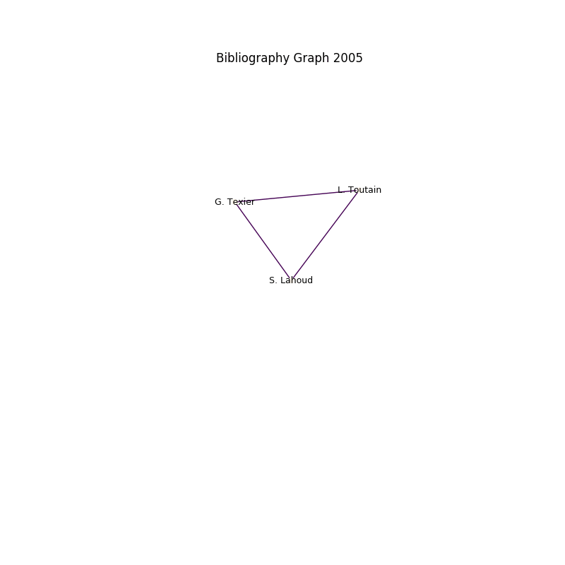

Research Activities
Ph.D. Advisor
I am currently a scientific advisor/co-advisor for three Ph.D. students. Since 2011, six Ph.D. students I advised have successfully defended their thesis. The following table summarises my Ph.D. advising activities.
| Student | Subject | Defence Date | Post-graduation |
|---|---|---|---|
| Rabah Guedrez | Traffic Engineering for Segment Routing | Expected in 2018 | |
| Soha Farhat | Radio Resource Allocation in Multi-Operator Networks | Expected in 2016 | |
| Mohamad Yassin | Interference Coordination in Wireless Cellular Networks | November 2015 | Post-doc with Orange Labs Rennes |
| Farah Moety | Joint Minimization of Power and Delay in Wireless Access Networks | December 2014 | Post-doc with Orange Labs Paris |
| Melhem El Helou | Radio Access Technology Selection in Heterogeneous Wireless Networks | November 2014 | Assistant professor at USJ Lebanon |
| Emna Salhi | Detection and localization of link-level network anomalies using end-to-end path monitoring | February 2013 | |
| Ahmed Frikha | On Providing QoS and reliability for next generation networks: Multi-Domain QoS Routing and Multicast Reliability | September 2012 | Post-doc with Orange Labs Lannion |
| Nabil Djarallah | Network Architectures for Inter-Carrier QoS-Capable Services | November 2011 | Post-doc with INRIA Lille |
| Alia Bellabas | Quality of Service Multicast Routing Subject to Multiple Constraints | October 2011 | Post-doc with Orange Labs |
Master Student Advisor
I also advise master students typically for a period ranging from three to six months.
| Student | Subject | Year | Post-graduation |
|---|---|---|---|
| Karen Boulos | Dynamic Clustering for Cloud Radio Access Networks | 2015 | |
| Mohamad Yassin | Dynamic and Distributed Radio Resource Allocation in Heterogeneous Wireless Networks | 2012 | Thesis at IRISA |
| Farah Moety | Distributed Heuristics for Radio Access Technology Selection | 2011 | Thesis at IRISA |
| Kamel Moad | Stability of QoS Routing | 2011 | |
| Siwar Said | Monitoring Multi-Domain Communications | 2010 | Thesis at Orange Labs |
| Ahmed Frikha | QoS Path Computation in Multi-Domain Networks | 2009 | Thesis at IRISA |
| Nabil Djarallah | Traffic Engineering in MPLS Multi-Domain Networks | 2008 | Thesis at IRISA |
| Rasha Hasan | Toolbox for Traffic Engineering in MPLS Networks | 2008 | Thesis at LAAS CNRS |
Participation in Ph.D. Committees
I was also honoured to be a member of the following Ph.D. committees:
| Student | Subject | Date |
|---|---|---|
| Mohamad Yassin | Inter-Cell Interference Coordination in Wireless Networks | November 2015 |
| Amine Adouane | Dynamic management of spectral resources in LTE networks | February 2015 |
| Farah Moety | Joint Minimization of Power and Delay in Wireless Access Networks | December 2014 |
| Melhem El Helou | Radio Access Technology Selection in Heterogeneous Wireless Networks | November 2014 |
| Emna Salhi | Detection and localization of link-level network anomalies using end-to-end path monitoring | February 2013 |
| Patricia Kaiser | Optimization of a Software Defined Radio Multi-Standard System Using Graph Theory | December 2012 |
| Ahmed Frikha | On Providing QoS and reliability for next generation networks: Multi-Domain QoS Routing and Multicast Reliability | September 2012 |
| Nabil Djarallah | Network Architectures for Inter-Carrier QoS-Capable Services | November 2011 |
| Alia Bellabas | Quality of Service Multicast Routing Subject to Multiple Constraints | October 2011 |
| Maria Sokhn | Ontology Driven Framework for Multimedia Retrieval in P2P Networks | August 2011 |
Scientific Collaborations
In the context of my scientific activities, I collaborate with researchers in different laboratories. The induced co-authorship relationship is represented hereafter using an automatic tool I developed.
